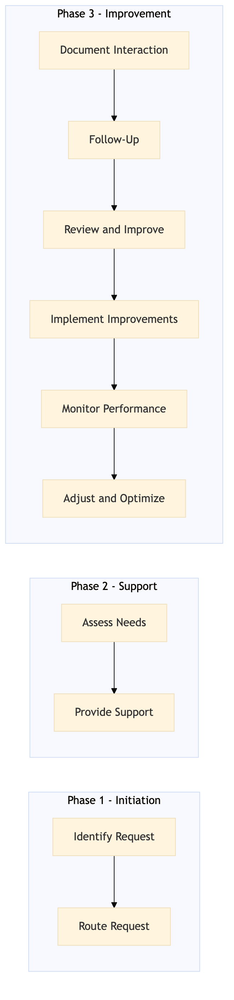

This process document outlines the steps and procedures for ensuring accessibility and special needs support within the OTA Customer Experience and Service domain, focusing on both Expedia Group (OTA) and Amex GBT / SAP Concur (TMC) systems.
| Trigger | A customer or partner requests assistance with accessibility features or special needs during a booking process or service interaction. |
| Outcome | The customer receives timely and effective support, ensuring their needs are met and they have a positive experience. |
| Systems | Salesforce Expedia Open World Partner Central Amadeus NDC Sabre GDS Travelport EVC One Key TravelAds AWS SageMaker Snowflake Kafka Tableau |

Click to enlarge
| Step | Name & Pain Point | Role | System | Input | Output | KPI | Flags |
|---|---|---|---|---|---|---|---|
| 1.1 | Identify Request Delays in identifying requests | Customer Service Representative (CSR) | Salesforce | Customer or partner request for accessibility support | Request logged in Salesforce | Response time within 5 minutes | ⚠ Exception |
| 1.2 | Route Request Incorrect routing | CSR | Salesforce | Logged request | Request routed to appropriate team or specialist | Routing accuracy rate 95% | ◆ Decision |
| 1.3 | Assess Needs Incomplete assessments | Specialist | Expedia Open World, Partner Central | Routed request | Detailed assessment of customer needs | Assessment completion within 10 minutes | ⚠ Exception |
| 1.4 | Provide Support Unmet needs | Specialist | Amadeus NDC, Sabre GDS, Travelport, EVC, One Key, TravelAds | Assessment results | Support provided to customer or partner | Customer satisfaction score 90% | ◆ Decision |
| 1.5 | Document Interaction Inaccurate documentation | CSR, Specialist | Salesforce | Interaction details | Updated case in Salesforce | Documentation accuracy rate 98% | ⚠ Exception |
| 1.6 | Follow-Up Lack of follow-ups | CSR, Specialist | Salesforce | Closed case | Scheduled follow-up with customer or partner | Follow-up completion rate 85% | ◆ Decision |
| 1.7 | Review and Improve No process improvements | Manager, Specialist | Tableau, Snowflake | Interaction data | Process improvements identified | Improvement suggestions rate 75% | ⚠ Exception |
| 1.8 | Implement Improvements Slow implementation | Manager, Specialist | AWS SageMaker, Kafka | Improvement suggestions | Updated processes and systems | Implementation rate 90% | ◆ Decision |
| 1.9 | Monitor Performance No performance improvements | Manager, Specialist | Tableau, Snowflake | Updated processes and systems | Performance metrics collected | Performance improvement rate 80% | ⚠ Exception |
| 1.10 | Adjust and Optimize No optimization | Manager, Specialist | AWS SageMaker, Kafka | Performance metrics | Optimized processes and systems | Optimization rate 95% | ◆ Decision |